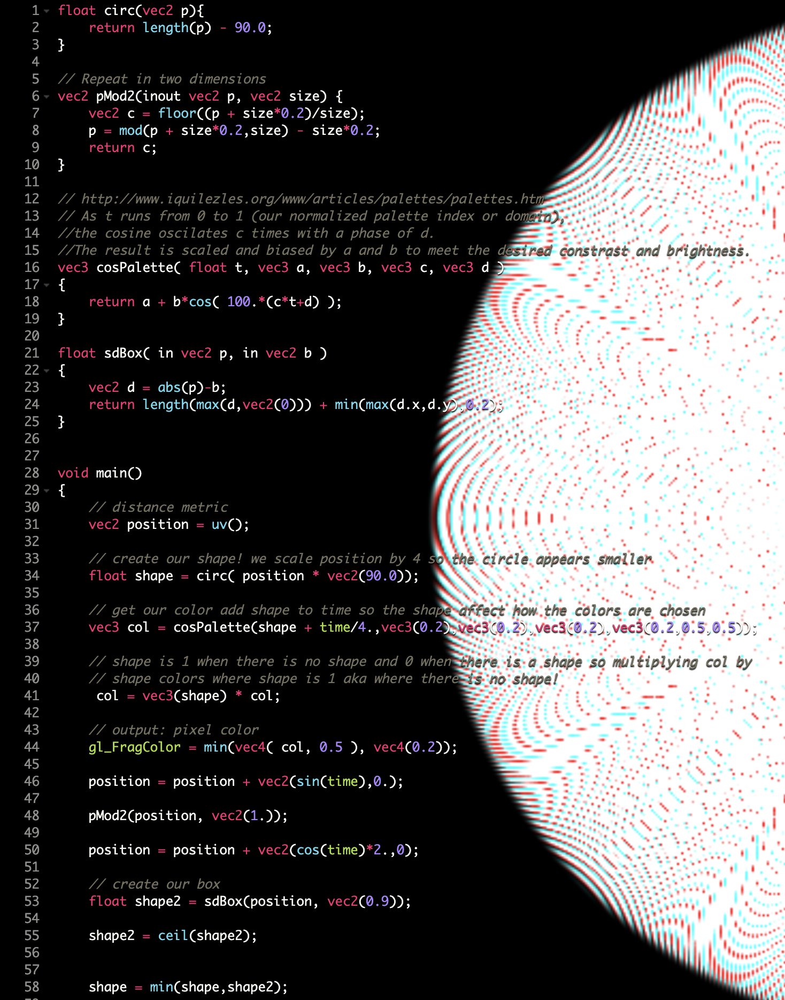
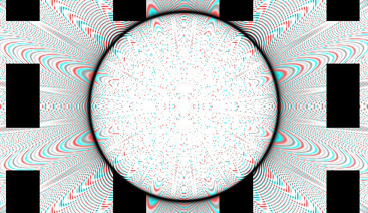

The Blank Hole is an experimental shader design. Opposite from the Black Hole, Blank Hole will release countless inspiration for artist and designers who’s struggling with their work.
Code and Screenshot


Raw Shader

Peephole
The Peephole is a tunnel that leads to the fourth dimention. It can help the user focusing on an artist/designer who is working on their own project. The user can select a specific moment to stop at and learn from their working process.

Inspiration Generator
The Inspiration Generator is a television that randomly shows artwork. The image changes as the shader flash each time.